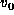
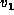
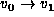
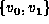
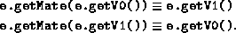

Data Structures and Algorithms
with Object-Oriented Design Patterns in Java
Data Structures and Algorithms
with Object-Oriented Design Patterns in JavaAn edge in a directed graph is an ordered pair of vertices; an edge in an undirected graph is a set of two vertices. Because of the similarity of these concepts, we use the same class for both--the context in which an edge is used determines whether it is directed or undirected.
Program  defines the Edge interface.
Since we intend to edges into containers,
the Edge interface extends the Comparable interface
defined in Program .
defines the Edge interface.
Since we intend to edges into containers,
the Edge interface extends the Comparable interface
defined in Program .
An edge connects two vertices,  and . The methods getV0 and getV1 return these vertices. The isDirected method is a boolean-valued method that returns true if the edge is directed. When an Edge is directed, it represents . That is, is the head and is the tail. Alternatively, when an Edge is undirected, it represents .
For every instance e of a class that implements the Edge interface, the getMate method satisfies the following identities:

Therefore, if we know that a vertex v is one of the vertices of e, then we can find the other vertex by calling e.getMate(v).
 Copyright © 1998 by Bruno R. Preiss, P.Eng. All rights reserved.
Copyright © 1998 by Bruno R. Preiss, P.Eng. All rights reserved.